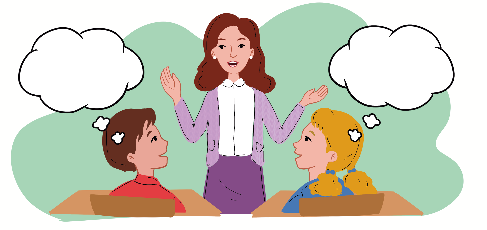
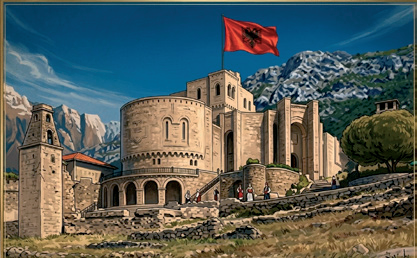
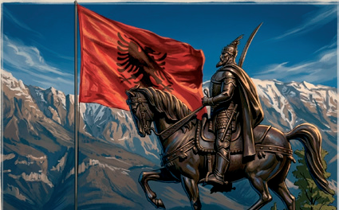

Mendime të ndryshme, vendime të përbashkëta
Respektoj mendimin e tjetrit
Situata 1.
Sa herë jemi gjendur përballë situatave të tilla Shkaku ishte propozimi i mësueses për të organizuar një udhëtim drejt qendrave historike e kulturore. Dritani zgjodhi Krujën, si vendin ku do të njihej me historinë e Skënderbeut, muzeun, rrugët e rrugicat e bukura të qytetit
Blerta u shpreh se e kishte vizituar. I pëlqente më shumë Prizreni. Aty zinte fill historia e Lidhjes së Prizrenit dhe e figurave të shquara të historisë së shqiptarëve brenda e jashtë trojeve


